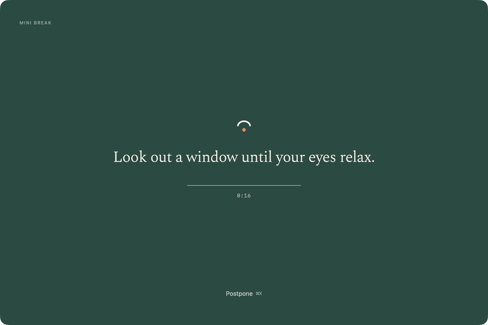
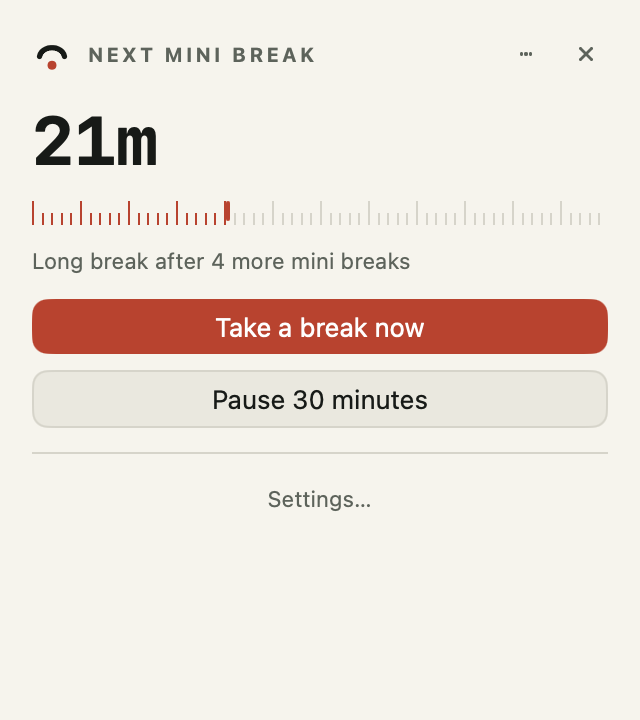
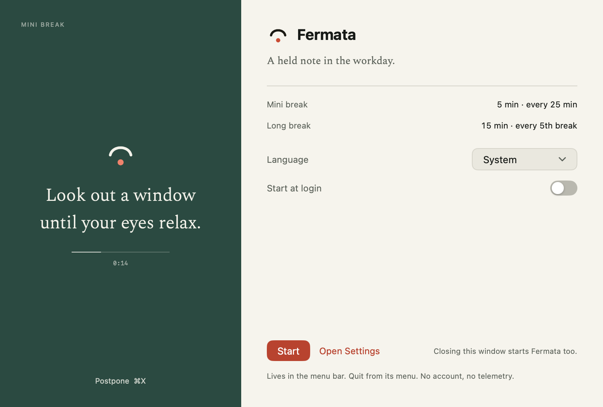
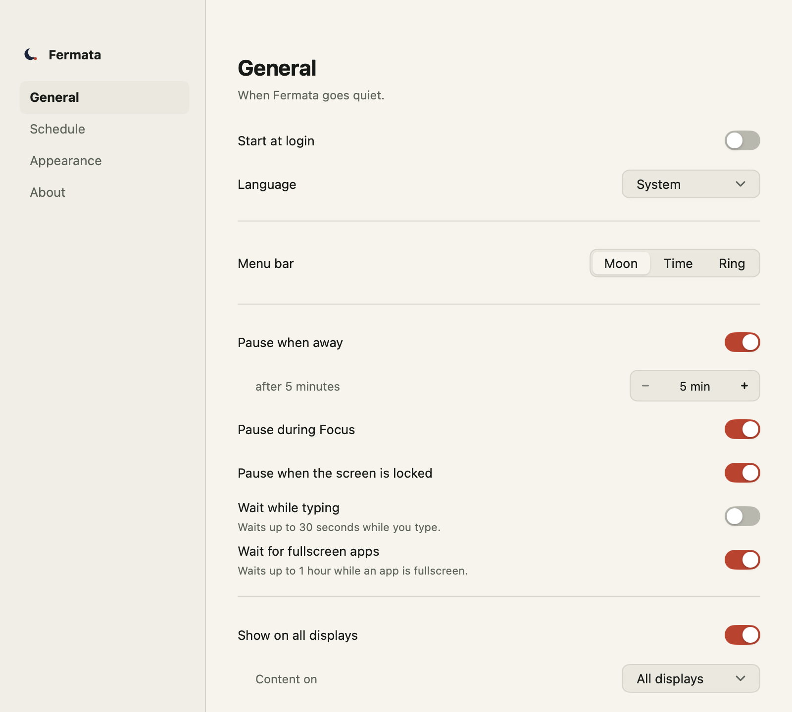
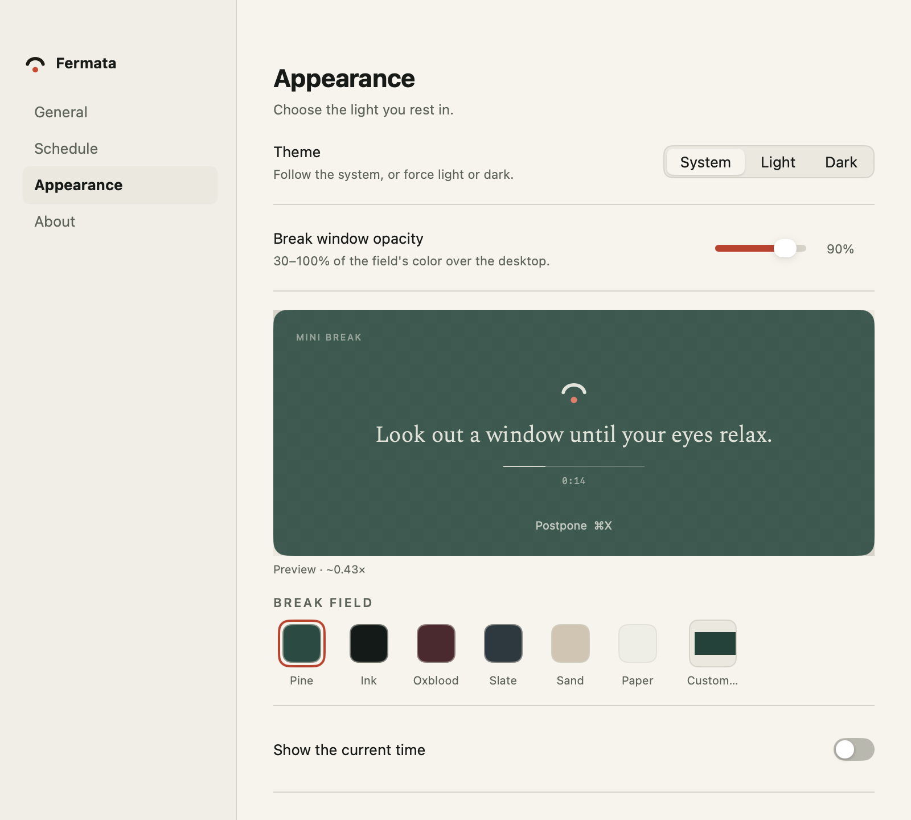

01
A field, not a dialog
One window per display at 85% of the screen: the fermata, one suggestion, a hairline that fills with the break, and exactly one exit.
Break reminder for the menu bar and the tray
Short breaks and long ones arrive on their own schedule, take the screen for a few minutes, and get out of the way. One process, a native menu bar item or tray icon, no webview — on macOS, Windows and Linux.

Fermata is the musical sign that tells a player to hold a note past its written value. The orchestra waits; then it goes on. 停琴, "the qin stops", comes from a line by the Southern Qi poet Xie Tiao. Both names describe one gesture, and the mark carries it: the arc is the fermata, the dot beneath is the finger resting on the string.
「停琴伫凉月，灭烛听归鸿」The qin stops; he stands in the cool moonlight, blows out the candle to hear the returning geese.Xie Tiao · 谢朓 《移病还园示亲属诗》
Look out a window until your eyes relax.
Pomodoro by default: a 5-minute mini break every 25 minutes, and a 15-minute long break after every four mini breaks. Both kinds are adjustable, and at least one stays on.
One window per display at 85% of the screen: the fermata, one suggestion, a hairline that fills with the break, and exactly one exit.
No postponing, no skipping, no closing the window; the app refuses to quit until the break ends. A locked screen still ends it.
30 minutes, an hour, until morning, or indefinitely. Or by itself: away, in Focus, while the screen is locked, and for the apps you exclude.
A fullscreen app holds the break up to an hour; typing holds it up to 30 seconds. Then it starts with its full duration.
General, Schedule, Appearance, About. English or 简体中文, start at login, menu bar style, field colour, sounds, app exclusions.
One Go process with a native menu bar item and no webview. Idle CPU near zero; nothing to keep in memory.




Homebrew or the disk image on macOS; an installer or a portable zip on Windows; a .deb, an .rpm, a tarball with install.sh or a PKGBUILD on Linux. The macOS build is ad-hoc signed and not notarized, and the Windows build is not signed yet, so SmartScreen asks once.
brew tap gythialy/tap
brew install --cask fermata
Windows: fermata-setup-…-amd64.exe, or the portable zip; choose More info → Run anyway on the first run. Linux: .deb, .rpm, tarball with install.sh, or PKGBUILD; GTK 3 and AppIndicator.
Update with brew upgrade --cask fermata.